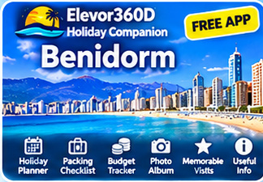
FREE HOLIDAY APP
Benidorm
Explore Benidorm's Levante and Poniente beaches, Old Town, restaurants, nightlife and local attractions. Plan your holiday, track spending and save your favourite Benidorm memories.
Open Free App ↗Plan • Explore • Record • Remember
Explore local attractions, organise your days, keep a packing checklist, track your budget and save memorable visits and photographs. Choose your destination below to open its free Holiday Companion.

Explore Benidorm's Levante and Poniente beaches, Old Town, restaurants, nightlife and local attractions. Plan your holiday, track spending and save your favourite Benidorm memories.
Open Free App ↗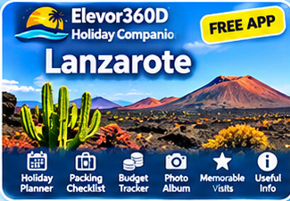
Discover Lanzarote's volcanic landscapes, beautiful beaches, Puerto del Carmen, Playa Blanca and Timanfaya National Park. Keep your holiday plans and memories together.
Open Free App ↗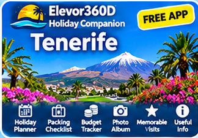
Explore Tenerife's beaches, Mount Teide, Costa Adeje, Los Cristianos and Puerto de la Cruz. Find useful local information and organise your holiday adventures.
Open Free App ↗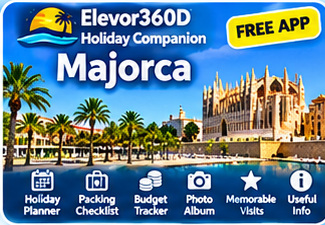
Discover Palma, Alcúdia, Sóller, Cala d'Or and Majorca's beautiful Mediterranean beaches. Plan day trips, organise your holiday and save your favourite places.
Open Free App ↗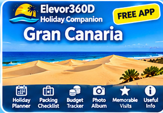
Explore Maspalomas, Playa del Inglés, Puerto Rico and the island's spectacular scenery. Discover attractions, plan excursions and record memorable visits.
Open Free App ↗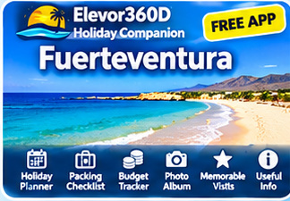
Discover Corralejo, Caleta de Fuste, Jandía and Fuerteventura's stunning sandy beaches. Explore the island, plan your days and save holiday photographs.
Open Free App ↗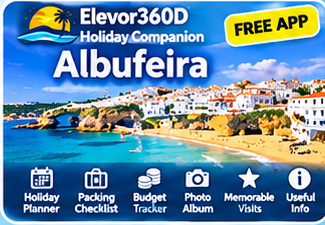
Explore Albufeira's Old Town, golden beaches, marina, restaurants and Algarve attractions. Plan your holiday and keep your favourite Portuguese memories together.
Open Free App ↗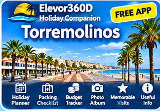
Discover La Carihuela, Bajondillo Beach, the promenade, local restaurants and Costa del Sol attractions. Organise your holiday and record your favourite experiences.
Open Free App ↗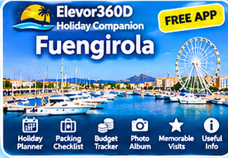
Explore Fuengirola's beaches, marina, historic castle, restaurants and local attractions. Plan days out and keep a personal record of your holiday.
Open Free App ↗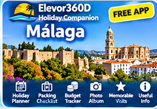
Discover Málaga's historic centre, Alcazaba, Picasso Museum, harbour and beaches. Explore the city's attractions while managing your holiday plans and memories.
Open Free App ↗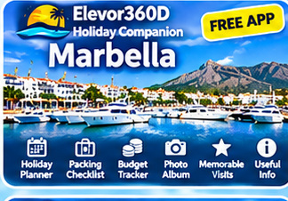
Explore Marbella's charming Old Town, Puerto Banús, Golden Mile and beautiful beaches. Discover places to visit, plan excursions and save memorable experiences.
Open Free App ↗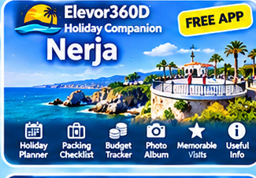
Discover the Balcón de Europa, Nerja Caves, Burriana Beach and nearby Frigiliana. Plan your holiday and record your favourite restaurants, beaches and visits.
Open Free App ↗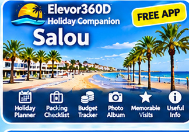
Explore Salou's golden beaches, promenade, PortAventura World and nearby Tarragona. Keep your holiday organised and save your favourite experiences.
Open Free App ↗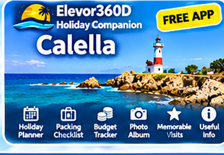
Discover Calella's sandy beaches, Old Town, lighthouse and coastal attractions. Plan your days, explore local places and record your holiday memories.
Open Free App ↗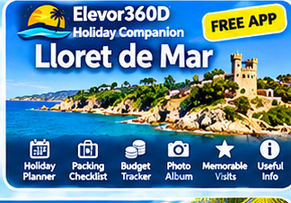
Explore Lloret de Mar's beaches, Santa Clotilde Gardens, nightlife and Costa Brava attractions. Plan your holiday and save your favourite places and photographs.
Open Free App ↗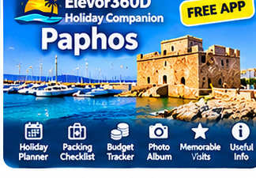
Discover Paphos Harbour, Coral Bay, Tombs of the Kings and the Archaeological Park. Explore Cyprus, organise your holiday and preserve special memories.
Open Free App ↗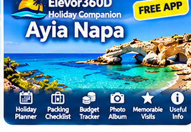
Explore Nissi Beach, Cape Greco, Ayia Napa Harbour, sea caves and local attractions. Plan your adventures, track your spending and save your favourite holiday moments.
Open Free App ↗Each companion includes destination information, useful website and map links, a holiday planner, packing checklist, budget tracker, memorable visits with star ratings, personal photo album and sharing features.
Free to use. Open your chosen app and follow its installation instructions to add it to your phone. Saved information can be available offline, but external links and maps require an internet connection. Your saved information may be specific to the device and browser, so use backup and restore where provided.